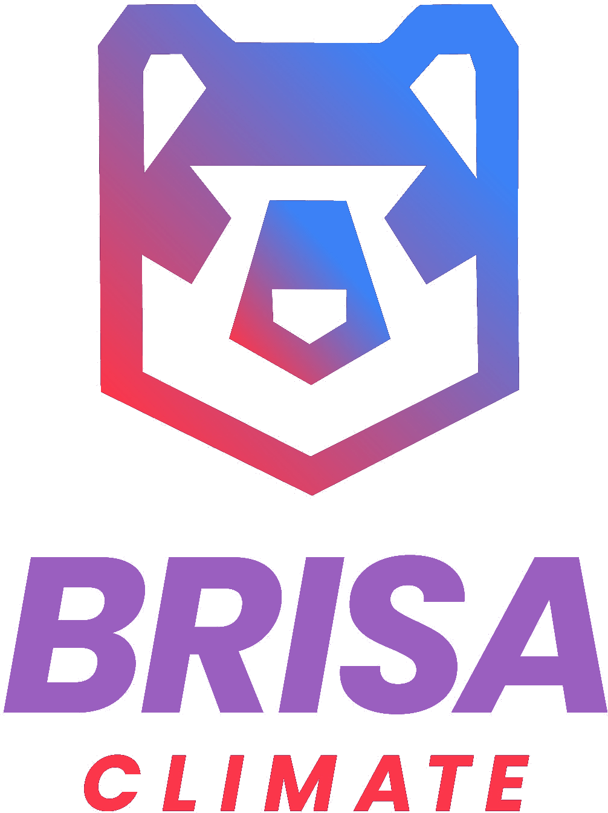
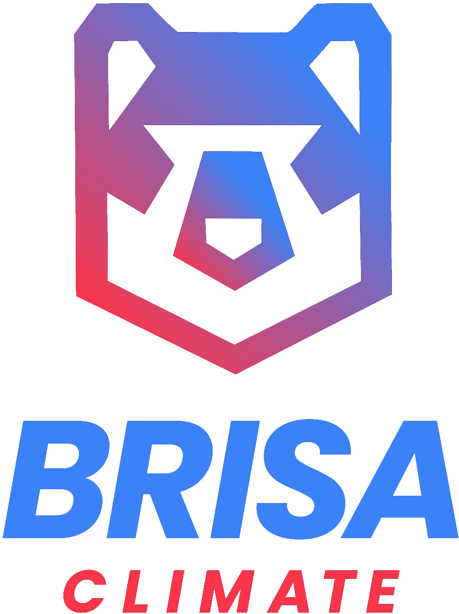
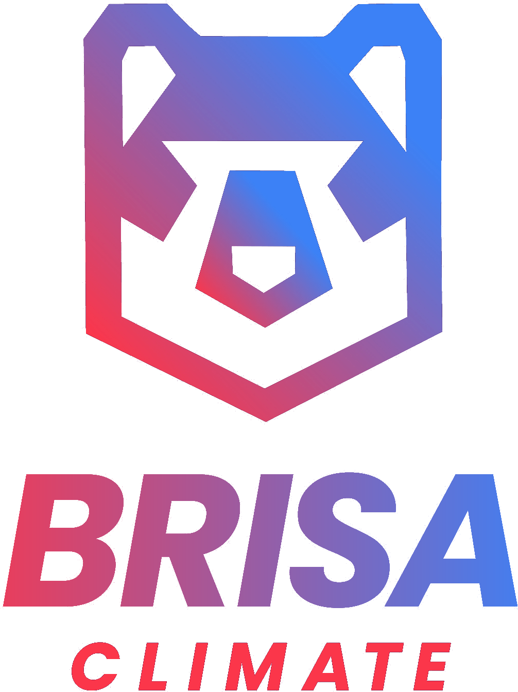

Each candidate on white (light mode) and on #1E1E1E (Outlook dark mode). CLIMATE and the bear are unchanged.
#9A5FBFBrand purple lifted to a mid-tone. Contrast: 4.41:1 on white, 3.78:1 on #1E1E1E.

#3C81F6The bear's own blue (sampled). Contrast: 3.72:1 on white, 4.49:1 on #1E1E1E.

#F23A54:#3C81F6The bear's red-to-blue gradient, left to right. Contrast: 3.7:1 on white, 4.5:1 on #1E1E1E.
